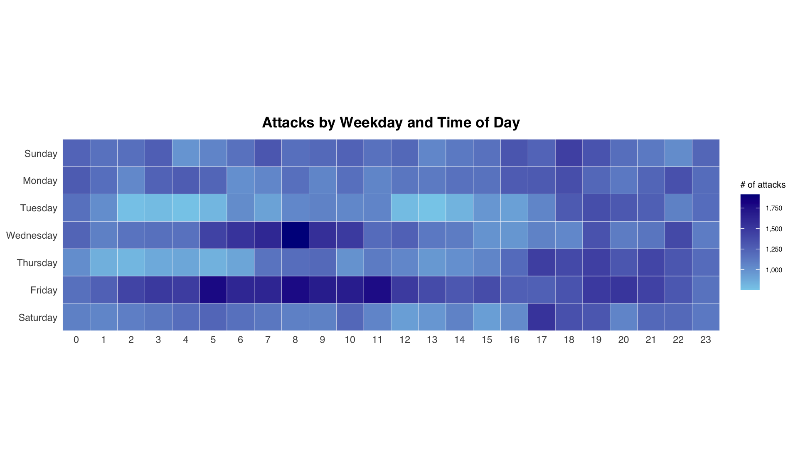
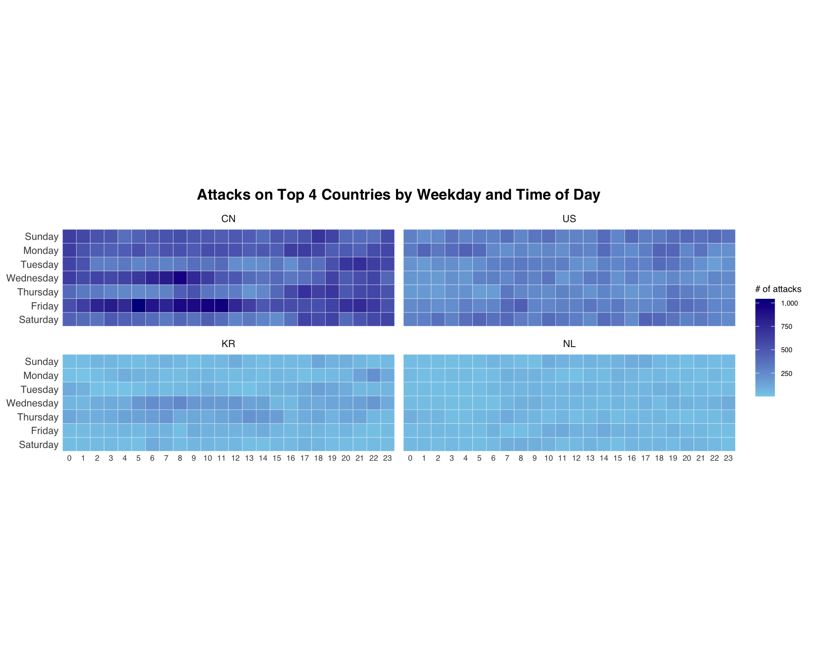
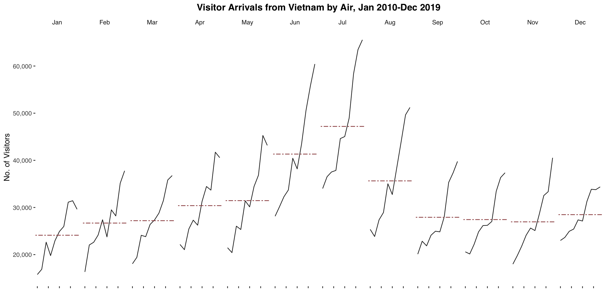
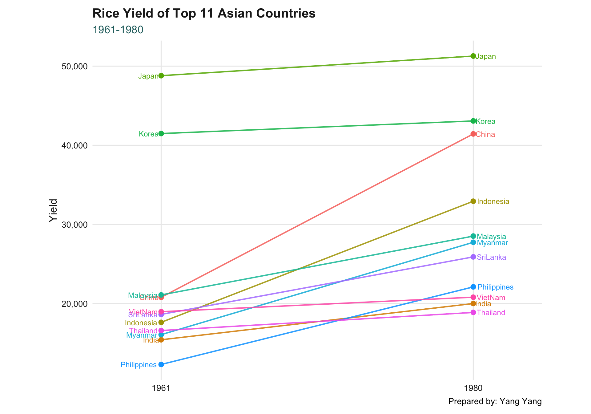

if (!requireNamespace("pacman", quietly = TRUE)) {
install.packages("pacman", repos = "https://cloud.r-project.org")
}Hands-on Exercise 8 - Visualising and Analysing Time-oriented Data
17.1 Learning Outcome
This hands-on exercise follows Chapter 17 of R4VA, Visualising and Analysing Time-oriented Data. By the end of this exercise, the following time-oriented visualisations will be created:
- calendar heatmap using
ggplot2; - multiple calendar heatmaps for the top source countries;
- cycle plot using
ggplot2; and - slopegraph for comparing two time points.
17.2 Getting Started
The code chunk below checks whether pacman is installed. If it is missing, it installs it from CRAN. This is included as executable code so the package setup is reproducible.
17.3 Do It Yourself
The code chunk below checks, installs, and launches the packages needed for this exercise. The original Chapter 17 package list includes CGPfunctions for newggslopegraph(). That package has been removed from live CRAN and currently depends on an archived package that does not load cleanly with this R/ggplot2 setup. For this reason, the evaluated package setup installs and loads the packages used by the runnable exercise, and the slopegraph section uses a ggplot2 fallback instead of failing.
required_packages <- c(
"scales",
"viridis",
"lubridate",
"ggthemes",
"gridExtra",
"readxl",
"knitr",
"data.table",
"ggHoriPlot",
"tidyverse",
"DT"
)
pacman::p_load(char = required_packages)
cgp_available <- requireNamespace("CGPfunctions", quietly = TRUE)The archived CGPfunctions installation command is shown below for reference. It is not evaluated in this document because its archived dependency ggmosaic does not currently load cleanly with this R/ggplot2 setup.
install.packages(
"https://cran.r-project.org/src/contrib/Archive/CGPfunctions/CGPfunctions_0.6.3.tar.gz",
repos = NULL,
type = "source"
)package_status <- tibble(
package = c(required_packages, "CGPfunctions"),
status = map_chr(
package,
~ if (requireNamespace(.x, quietly = TRUE)) "Available" else "Not available"
)
)
DT::datatable(
package_status,
rownames = FALSE,
options = list(pageLength = 12, dom = "tip")
)17.4 Plotting Calendar Heatmap
This section uses eventlog.csv, which contains cyber attack records by timestamp, source country, and time zone.
17.4.1 The Data
attacks_raw <- read_csv(find_data_file("eventlog.csv"), show_col_types = FALSE)
glimpse(attacks_raw)Rows: 199,999
Columns: 3
$ timestamp <dttm> 2015-03-12 15:59:16, 2015-03-12 16:00:48, 2015-03-12 1…
$ source_country <chr> "CN", "FR", "CN", "US", "CN", "CN", "CN", "CN", "CN", "…
$ tz <chr> "Asia/Shanghai", "Europe/Paris", "Asia/Shanghai", "Amer…17.4.2 Examining the Data Structure
kable(head(attacks_raw))| timestamp | source_country | tz |
|---|---|---|
| 2015-03-12 15:59:16 | CN | Asia/Shanghai |
| 2015-03-12 16:00:48 | FR | Europe/Paris |
| 2015-03-12 16:02:26 | CN | Asia/Shanghai |
| 2015-03-12 16:02:38 | US | America/Chicago |
| 2015-03-12 16:03:22 | CN | Asia/Shanghai |
| 2015-03-12 16:03:45 | CN | Asia/Shanghai |
There are three columns in the data:
timestamp: date-time value of the cyber attack record;source_country: ISO 3166-1 alpha-2 country code of the attack source; andtz: time zone of the source IP address.
17.4.3 Data Preparation
The calendar heatmap needs weekday and hour fields. The function below converts the timestamp by time zone, then derives the weekday and hour.
make_hr_wkday <- function(ts, sc, tz) {
real_times <- ymd_hms(
format(ts, "%Y-%m-%d %H:%M:%S"),
tz = tz[1],
quiet = TRUE
)
data.table(
source_country = sc,
wkday = weekdays(real_times),
hour = hour(real_times)
)
}wkday_levels <- c(
"Saturday", "Friday", "Thursday", "Wednesday",
"Tuesday", "Monday", "Sunday"
)
attacks <- attacks_raw |>
group_by(tz) |>
group_modify(
~ make_hr_wkday(
ts = .x$timestamp,
sc = .x$source_country,
tz = .y$tz
)
) |>
ungroup() |>
mutate(
wkday = factor(wkday, levels = wkday_levels),
hour = factor(hour, levels = 0:23)
)
kable(head(attacks))| tz | source_country | wkday | hour |
|---|---|---|---|
| Africa/Cairo | BG | Saturday | 20 |
| Africa/Cairo | TW | Sunday | 6 |
| Africa/Cairo | TW | Sunday | 8 |
| Africa/Cairo | CN | Sunday | 11 |
| Africa/Cairo | US | Sunday | 15 |
| Africa/Cairo | CA | Monday | 11 |
17.4.4 Building the Calendar Heatmap

grouped <- attacks |>
count(wkday, hour) |>
ungroup() |>
na.omit()
ggplot(grouped, aes(hour, wkday, fill = n)) +
geom_tile(color = "white", linewidth = 0.1) +
theme_tufte(base_family = "Helvetica") +
coord_equal() +
scale_fill_gradient(
name = "# of attacks",
low = "sky blue",
high = "dark blue"
) +
labs(
x = NULL,
y = NULL,
title = "Attacks by Weekday and Time of Day"
)17.4.5 Building Multiple Calendar Heatmaps
The top four source countries are identified by attack count, then the calendar heatmap is faceted by country.
attacks_by_country <- count(attacks, source_country) |>
mutate(percent = percent(n / sum(n))) |>
arrange(desc(n))
DT::datatable(
attacks_by_country,
rownames = FALSE,
options = list(pageLength = 10, dom = "tip")
)top4 <- attacks_by_country$source_country[1:4]
top4_attacks <- attacks |>
filter(source_country %in% top4) |>
count(source_country, wkday, hour) |>
ungroup() |>
mutate(source_country = factor(source_country, levels = top4)) |>
na.omit()
ggplot(top4_attacks, aes(hour, wkday, fill = n)) +
geom_tile(color = "white", linewidth = 0.1) +
theme_tufte(base_family = "Helvetica") +
coord_equal() +
scale_fill_gradient(
name = "# of attacks",
low = "sky blue",
high = "dark blue"
) +
facet_wrap(~source_country, ncol = 2) +
labs(
x = NULL,
y = NULL,
title = "Attacks on Top 4 Countries by Weekday and Time of Day"
)17.5 Plotting Cycle Plot
This section uses arrivals_by_air.xlsx to visualise visitor arrivals from Vietnam by month and year.
17.5.1 Step 1: Data Import
air <- read_excel(find_data_file("arrivals_by_air.xlsx"))
kable(head(air[, 1:6]))| Month-Year | Republic of South Africa | Canada | USA | Bangladesh | Brunei |
|---|---|---|---|---|---|
| 2000-01-01 | 3291 | 5545 | 25906 | 2883 | 3749 |
| 2000-02-01 | 2357 | 6120 | 28262 | 2469 | 3236 |
| 2000-03-01 | 4036 | 6255 | 30439 | 2904 | 3342 |
| 2000-04-01 | 4241 | 4521 | 25378 | 2843 | 5117 |
| 2000-05-01 | 2841 | 3914 | 26163 | 2793 | 4152 |
| 2000-06-01 | 2776 | 3487 | 28179 | 3146 | 5018 |
17.5.2 Step 2: Deriving Month and Year Fields
air <- air |>
mutate(
month = factor(
month(`Month-Year`),
levels = 1:12,
labels = month.abb,
ordered = TRUE
),
year = year(ymd(`Month-Year`))
)17.5.3 Step 4: Extracting the Target Country
Vietnam <- air |>
select(Vietnam, month, year) |>
filter(year >= 2010)
kable(head(Vietnam))| Vietnam | month | year |
|---|---|---|
| 15781 | Jan | 2010 |
| 16335 | Feb | 2010 |
| 18061 | Mar | 2010 |
| 22154 | Apr | 2010 |
| 21461 | May | 2010 |
| 28146 | Jun | 2010 |
17.5.4 Step 5: Computing Year Average Arrivals by Month
hline.data <- Vietnam |>
group_by(month) |>
summarise(avgvalue = mean(Vietnam), .groups = "drop")
kable(hline.data)| month | avgvalue |
|---|---|
| Jan | 24113.4 |
| Feb | 26693.4 |
| Mar | 27200.1 |
| Apr | 30390.8 |
| May | 31452.9 |
| Jun | 41325.3 |
| Jul | 47192.7 |
| Aug | 35639.9 |
| Sep | 27918.8 |
| Oct | 27433.0 |
| Nov | 26949.2 |
| Dec | 28480.9 |
17.5.5 Step 6: Plotting the Cycle Plot

ggplot() +
geom_line(
data = Vietnam,
aes(x = year, y = Vietnam, group = month),
colour = "black"
) +
geom_hline(
aes(yintercept = avgvalue),
data = hline.data,
linetype = 6,
colour = "red",
linewidth = 0.5
) +
facet_grid(~month) +
labs(
title = "Visitor arrivals from Vietnam by air, Jan 2010-Dec 2019",
x = "",
y = "No. of Visitors"
) +
theme_tufte(base_family = "Helvetica")17.6 Plotting Slopegraph
Chapter 17 uses newggslopegraph() from CGPfunctions. Because CGPfunctions is not currently installable cleanly in this R setup, this section creates the same type of two-year comparison using ggplot2, which is already available and keeps the exercise runnable.
17.6.1 Step 1: Data Import
rice <- read_csv(find_data_file("rice.csv"), show_col_types = FALSE)
kable(head(rice))| Country | Year | Yield | Production |
|---|---|---|---|
| China | 1961 | 20787 | 56217601 |
| China | 1962 | 23700 | 65675288 |
| China | 1963 | 26833 | 76439280 |
| China | 1964 | 28289 | 85853780 |
| China | 1965 | 29667 | 90705630 |
| China | 1966 | 31445 | 98403990 |
17.6.2 Step 2: Plotting the Slopegraph
rice_slope <- rice |>
mutate(Year = factor(Year)) |>
filter(Year %in% c("1961", "1980")) |>
group_by(Country) |>
filter(n_distinct(Year) == 2) |>
ungroup()
rice_slope <- rice |>
mutate(Year = factor(Year)) |>
filter(Year %in% c("1961", "1980")) |>
group_by(Country) |>
filter(n_distinct(Year) == 2) |>
ungroup()
ggplot(
rice_slope,
aes(x = Year, y = Yield, group = Country, colour = Country)
) +
geom_line(linewidth = 0.8) +
geom_point(size = 2.4) +
geom_text(
data = filter(rice_slope, Year == "1961"),
aes(label = Country),
hjust = 1.12,
show.legend = FALSE
) +
geom_text(
data = filter(rice_slope, Year == "1980"),
aes(label = Country),
hjust = -0.12,
show.legend = FALSE
) +
coord_cartesian(clip = "off") +
theme_yy +
theme(legend.position = "none")Key Takeaways
Tip
Time-oriented visualisation works best when the date-time fields are converted into meaningful analysis fields such as weekday, hour, month, and year. Once these fields are derived, ggplot2 can be used to build calendar heatmaps, cycle plots, and slopegraphs.
In this exercise:
- calendar heatmaps reveal attack intensity by weekday and hour;
- faceted calendar heatmaps compare temporal attack patterns across countries;
- cycle plots compare monthly seasonal patterns across years; and
- slopegraphs show how country-level rice yield changed between 1961 and 1980.